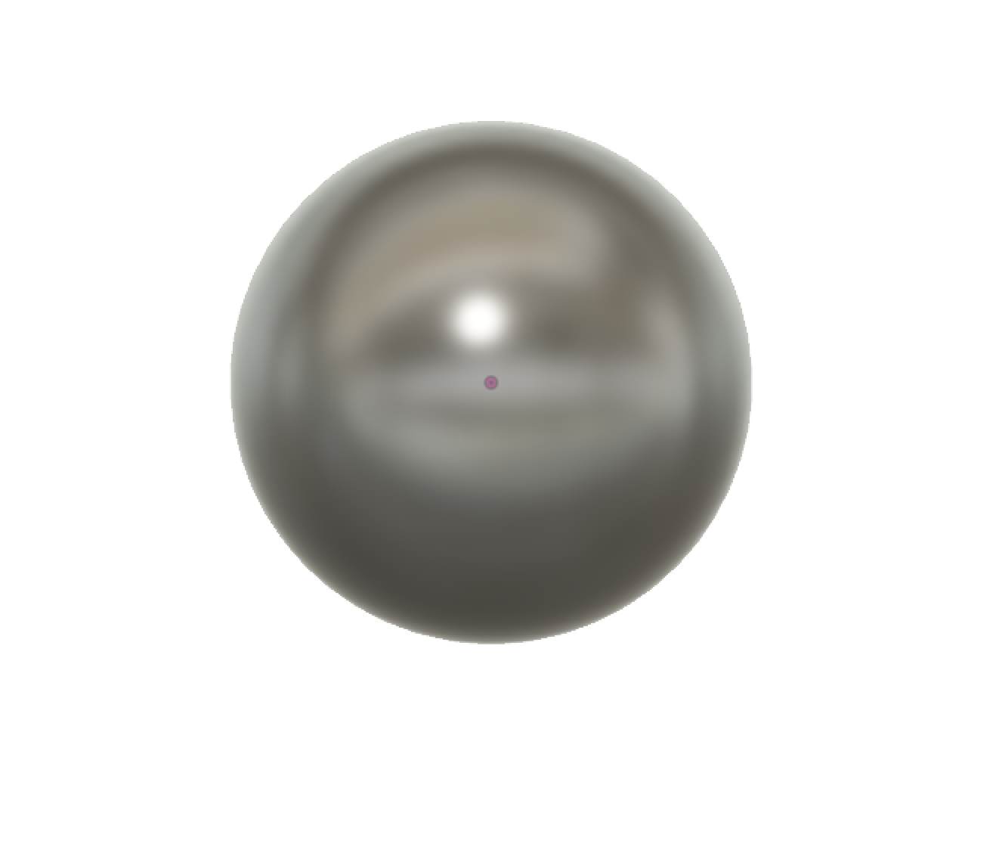
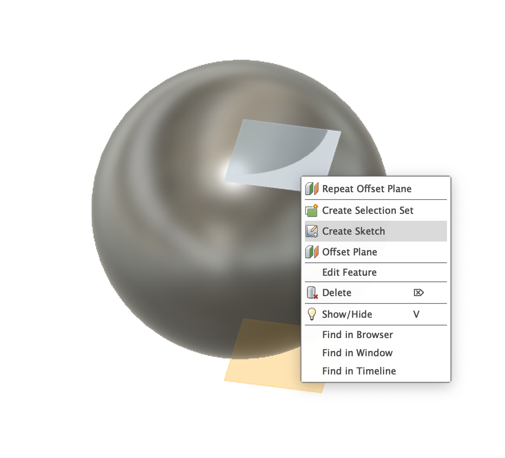
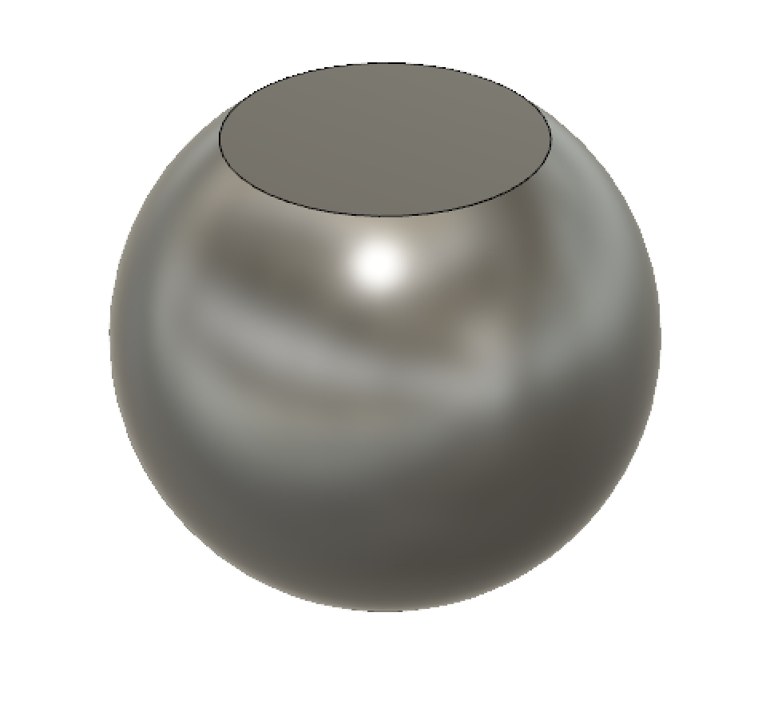
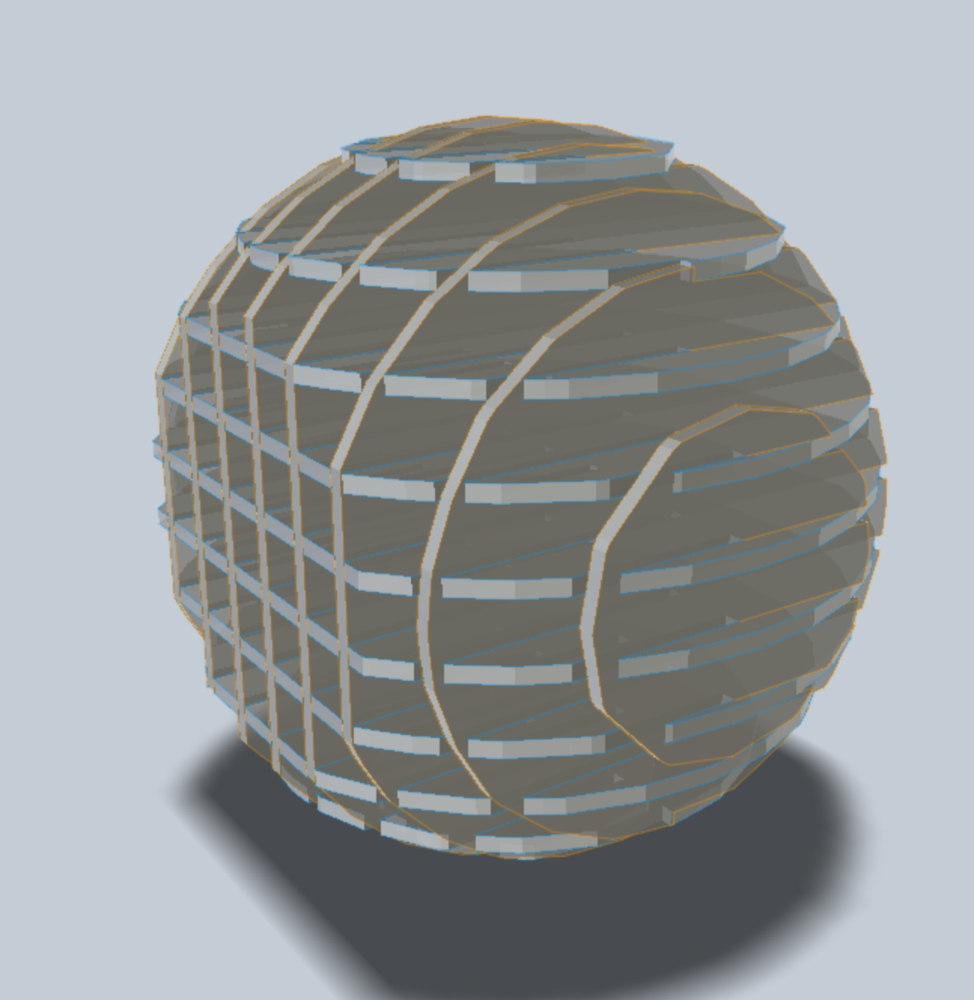
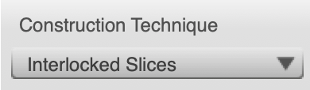
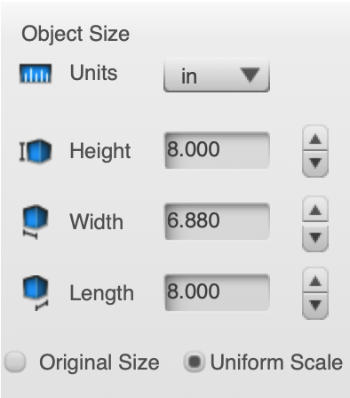
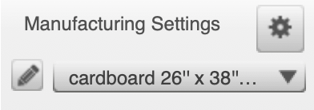
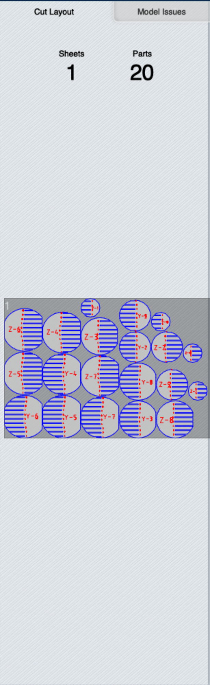
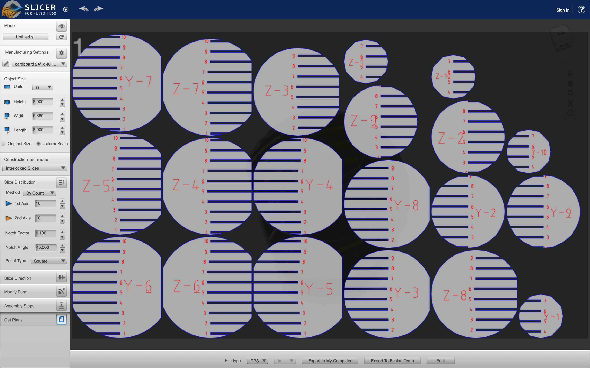

6.1 Designing and Slicing
Before using the Slicer Software I have to design an object. I used Fusion 360 for this. Initialy I created a sphere using the "Sphere" tool with a diameter of 2.5 inches. However, the dimensions can be changed later on in the Slicer Software.
Now that I have a Sphere, I need to turn it into something like a table where it can stand still without any suypport. Hence, I created a plane 1 inches above the origin and another plane 1.15 inches below the origin.
Now using those planes I created sketches where I made a circle and extruded it as a "cut" tool. This allowed me to get 2 slices from the Sphere and have a stable base and a desktop.
Now using the "MAKE" Tool, I exported my design to Slicer Software.

Now that my design is in the Slicer Software, I need to chose a type of slicing. I chose the interlocking slices to make my "mini bedside table." After chosing the type of Slicing, I chose the dimensions of the object as 8x6x8 inches.
  However, before Laser Cutting I have to tell the Slicer Software which material I am using to cut. I click the edit button near the material selections and a big window pops up. I input a new material in there.
After, setting up everything, the Slicer Software shows me a 2D representation of each slices on the material I inputed.
After that I open the 2D representation and download it as ESP file to import it on Adobe Ilustrator and finally print it with Epilogue to Laser Cut the parts out.
For importing the 2D slices to Adobe Illustrator go to the next page -->